Here is some of my pixel art. Feel free to use but please give credit.
- Hunter
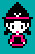
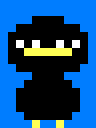
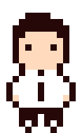
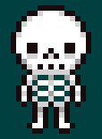
Happy Valentine's Day
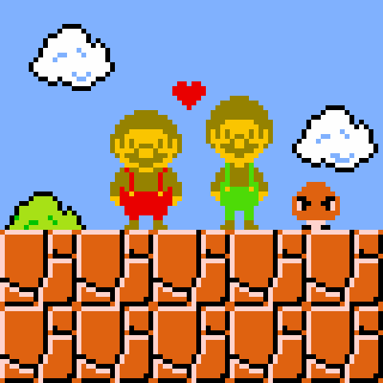I was going to add arms but i got bored.
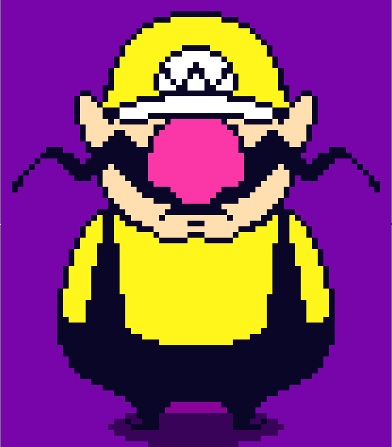My OC (Original Character)
Basically it's a haunted gameboy that came to life when someone accidentally inserted a cartridge that was possessed by a mischevious ghost

here are some sprites for a game i'm working on.
the main character is a tadpole so they don't have arms.
the game revolves around eating things and spitting them out
(kinda like Kirby but in isometric 3D)
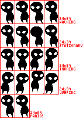
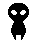
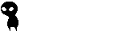
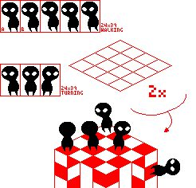
an animation i made with Flipnote Studio on the Nintendo DSi
Traditional Art
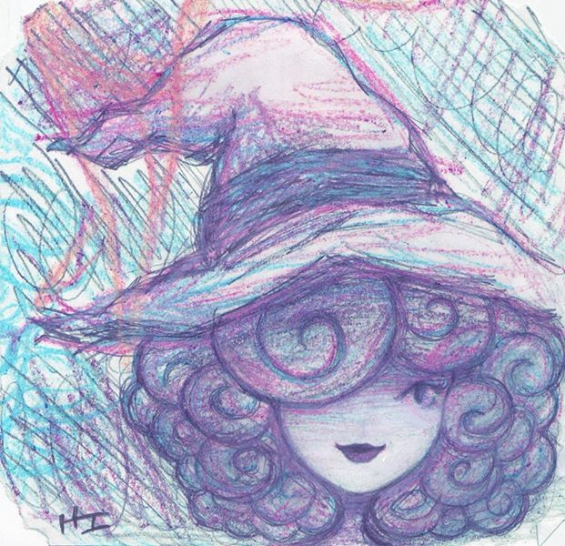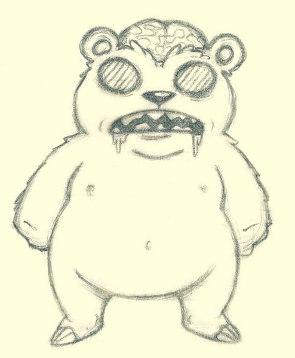
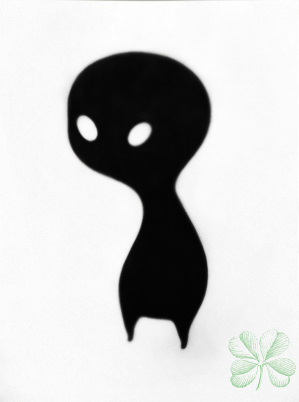
Idea for a Pokémon webcomic starring Ditto - wacky hijinks ensue as ditto changes into random people and things
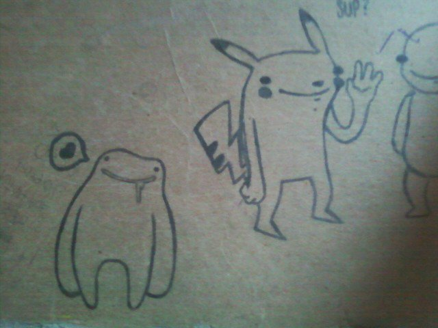